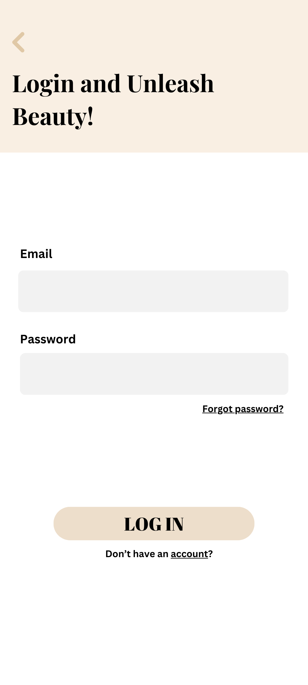

Academic project · Native Android
SkinFluence
A skincare browsing application with account screens, product categories, and navigation between native Android activities.
- My role
- Android Developer
- Project context
- Java Android application
- Focus
- User workflows · Development · Testing
Purpose & solution
SkinFluence brings account access and skincare product browsing into a mobile application. The app organizes products into categories such as cleansers, toners, serums, moisturizers, and sunscreen.
Users can create an account, sign in, browse skincare categories, and open product details.
How the app works
-
Open the app
A custom splash and welcome screen introduce the app and lead users to sign in or create an account.
-
Create or access an account
Registration validates name, email, and password before account creation. Login checks email verification before opening the home screen.
-
Browse a category
Users choose a skincare category to see a focused list of products.
-
Open a product
A two-column product grid makes the results easy to scan. Selecting a product opens its details.
My contribution
As an Android Developer, I developed the custom splash, start, login, sign-up, and home interfaces, connected multi-screen activities, and worked with XML layouts, AndroidX, Material Components, and ConstraintLayout.

Tech stack
- Native UI
- Java activities handle events and screen changes. XML resources define the layouts and visual assets.
- Navigation & lists
- Intents carry the selected category and Parcelable product data. RecyclerView renders the product grid.
- Account services
- Firebase Authentication manages account access; Firestore stores registration profile data.
- Build
- Gradle packages the native Android app for testing.
Helping users complete each step
Login handles blank or malformed email and missing passwords. Registration checks password length and character requirements. Category navigation handles an empty product list rather than opening an empty results screen.
What I practiced
I practiced connecting custom layouts to Java activity behavior, managing transitions between screens, and building a runnable Android package. The project also provides concrete examples of passing structured data between activities instead of treating screens as disconnected designs.